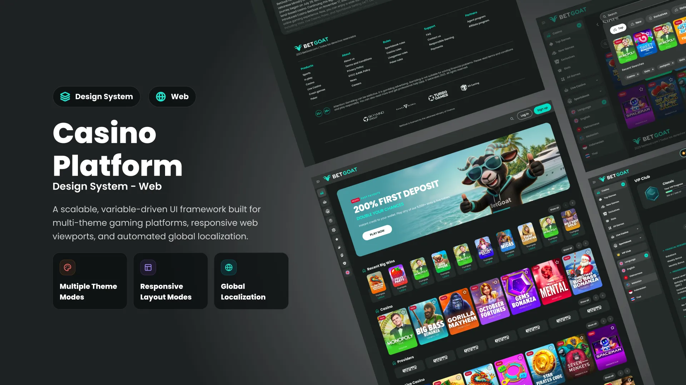

Define the pattern
Design the shared flow, states and responsive behaviour once.
A responsive, variable-driven design system that turns shared casino functionality into configurable web products.

The challenge
New web products were being designed almost from scratch. Navigation, lobby patterns, account flows and responsive states were recreated for every brand and market.
The goal was one reliable web foundation that could support different identities, currencies, languages and feature sets without redesigning the product structure.
The system
The Web Design System combines shared product patterns with variables, tokens, responsive components and configuration rules. Teams change what is brand- or market-specific while preserving the tested structure underneath.
Ongoing scale
New web functionality is designed at system level, then introduced into each casino through brand, market, currency and feature configuration.
Design the shared flow, states and responsive behaviour once.
Apply brand, platform, locale, currency and feature variables.
Introduce the feature into any product built on the shared foundation.